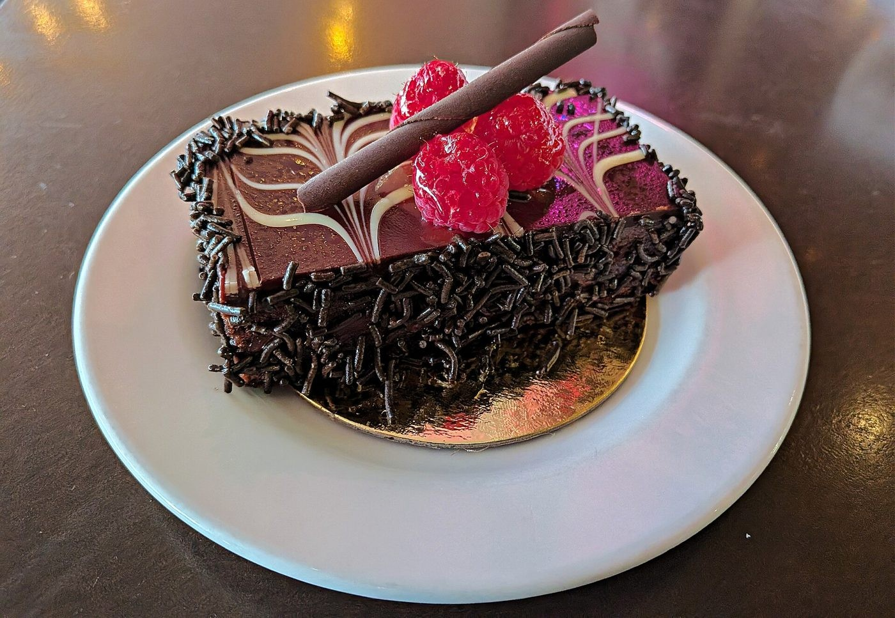
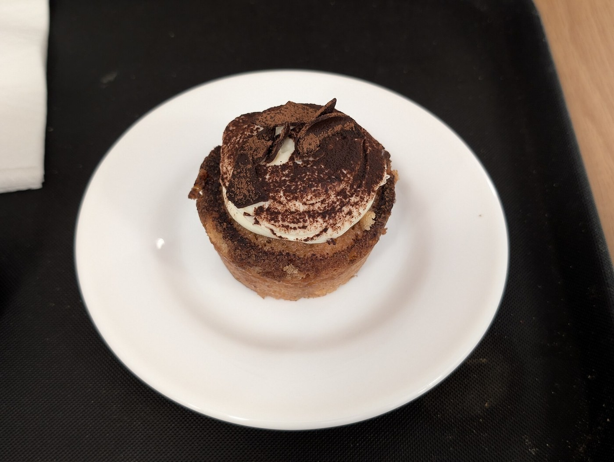
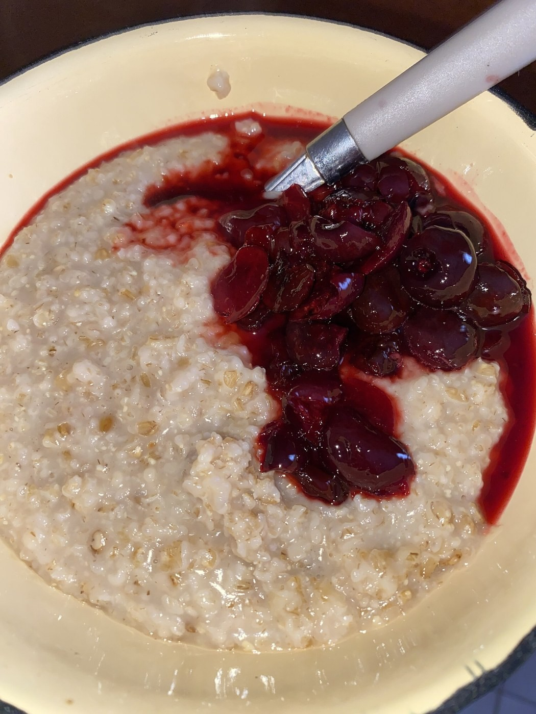

枕崎市汐見町 / グルテンフリーの喫茶
ツキミチ喫茶
おいしく体にやさしいものを食べて、ゆっくり自分を見つめ直す。小麦を使わない手作りの甘いひとときを、枕崎の港町で。
お店の由来・想い
厨房に、小麦を持ち込まない。
ツキミチ喫茶は、2025年7月末に枕崎市汐見町で開店した喫茶です。完全グルテンフリーにこだわり、米粉・オートミール粉・おから粉など、お菓子に合わせて選んだ自然素材で一つひとつ手作りしています。
オーナーの倉園絵里さんは、開店準備中に大病を患ったことをきっかけにグルテンフリーを決めたと、地元の紹介記事で語られています。「おいしく体に優しいものを食べて、ゆっくり自分を見つめ直してほしい」という言葉が、このお店の出発点です。
情報源: 373news(紹介記事) / ブログでの紹介 / Instagram
店名「ツキミチ」の意味は確認できていません。月の光に照らされた道のような静かな色合いは制作側のイメージです。上記の事実以外の言い回しは制作側の表現です。


メニュー・提供内容
米粉の生地に、季節のくだもの。
紹介記事やInstagramで確認できた内容です。価格・提供日・詳細は「準備中」とし、最新情報はInstagramをご覧ください。





ゆっくりと
豆を挽いて、ゆっくり淹れる時間のイメージ。
コーヒー豆の写真は雰囲気を伝えるイメージです。お店で使っている豆とは限りません。


口コミ
お客様の声(イメージ例)
以下は制作側が作成したイメージ例で、実在のお客様の声ではありません。
小麦を使っていないと聞いて来ましたが、しっとりしていて食べごたえがありました。ゆっくり過ごせます。
季節のフルーツをのせたケーキがきれいで、体にやさしい甘さでほっとしました。
暑い日にミルク氷をいただきました。ふわふわで、溶けても味が薄くならないのがうれしいです。
アクセス・ご案内
お店のこと
| 所在地 | 〒898-0002 鹿児島県枕崎市汐見町195 |
|---|---|
| 電話 | 準備中 |
| 営業時間 | 10:30〜17:00(紹介記事による。変更の可能性あり) |
| 定休日 | 水曜・日曜(同上) |
| ご予約 | 準備中 |
| SNS | Instagram @tsukimichi31 |